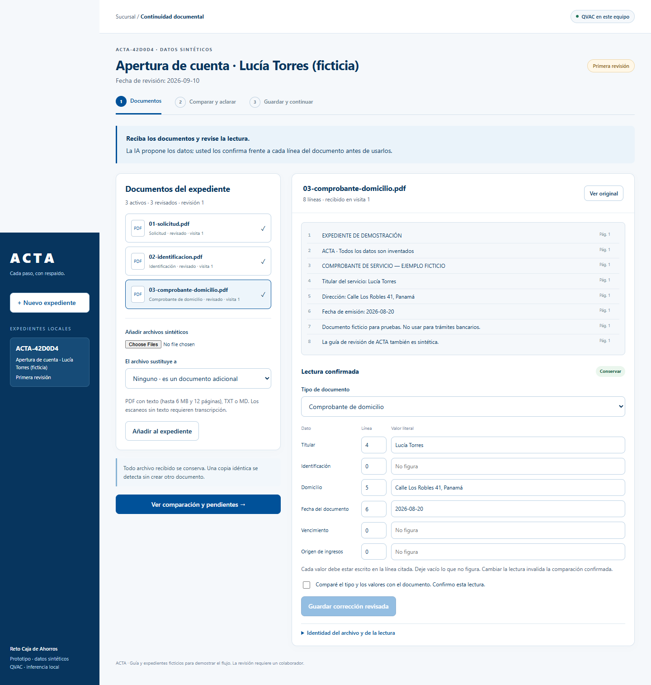
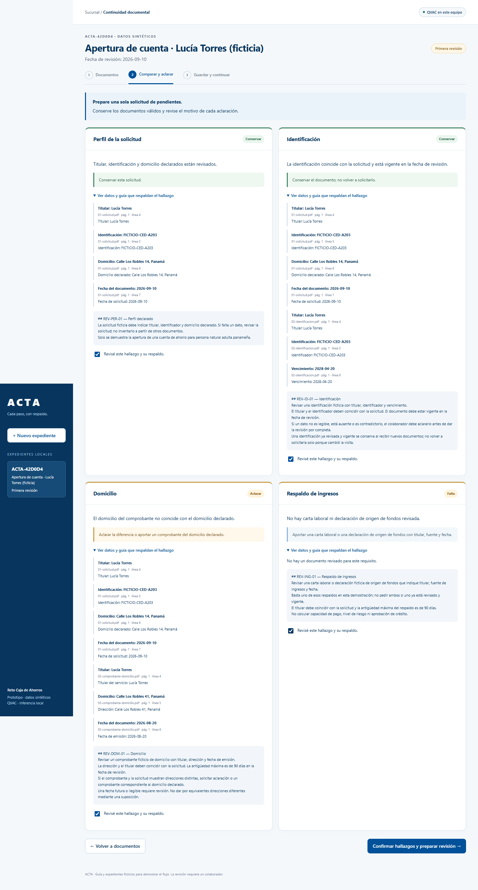
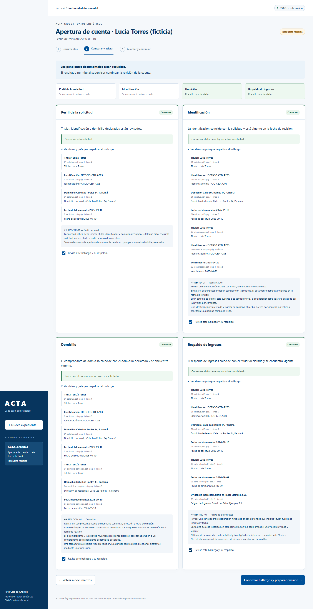
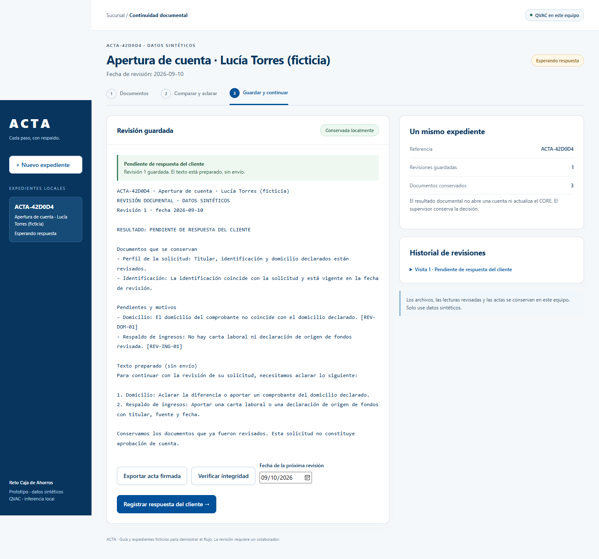
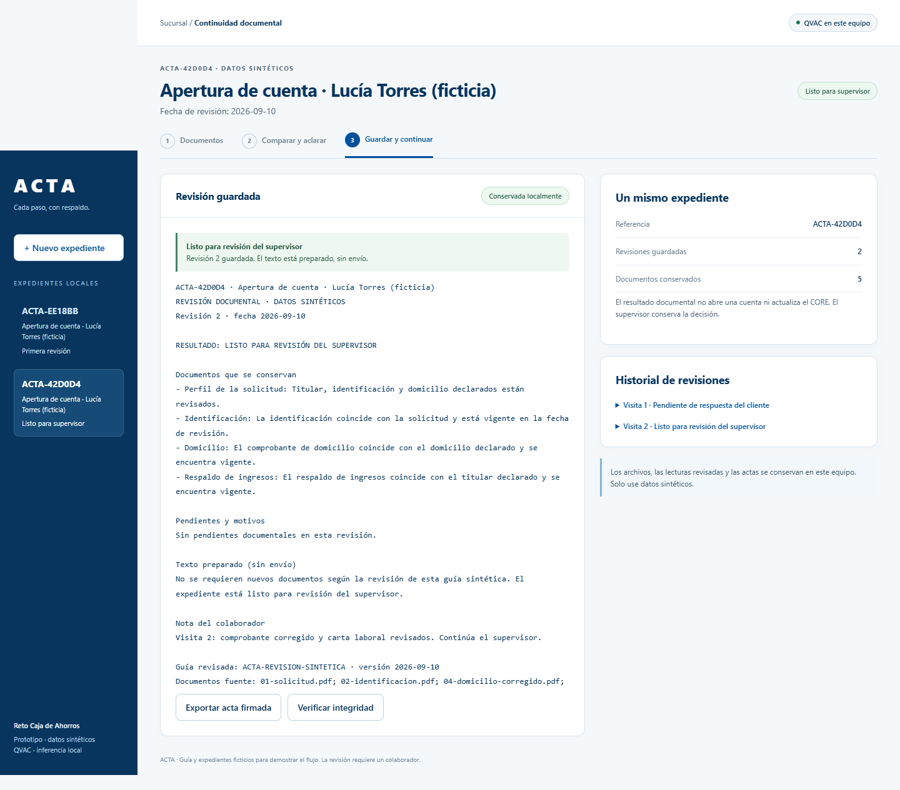
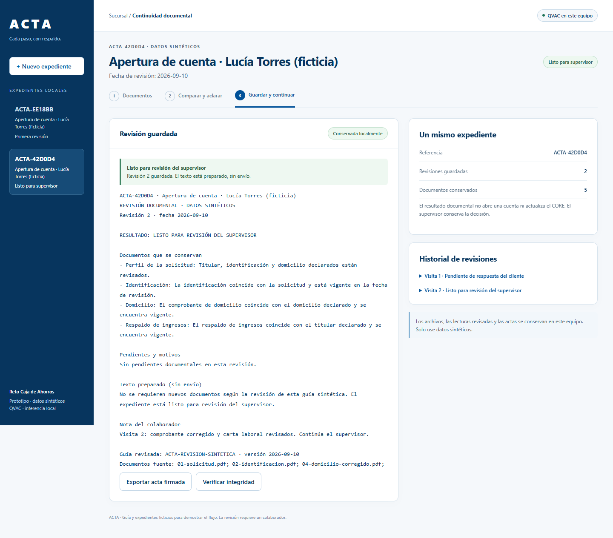

Evidencia verificada y límites
Qué está demostrado y qué no
Todo en esta página proviene de ejecuciones locales registradas en este PC el 2026-09-10, solo con datos sintéticos. Los conteos son verificaciones de software de la aplicación; no son mediciones de exactitud del modelo, ni aceptación bancaria, ni mediciones de productividad.
Propuesta para el Decentralized AI Hackathon · Track05 · Inteligencia local para la banca.
Resultados verificados
| Verificación | Resultado | Alcance exacto |
|---|---|---|
| Suite de pruebas deterministas | 35/35 | Verificaciones de software de la aplicación (servicios, almacén, firmas, controles de revisión). No es exactitud del modelo. |
| Flujo de dos visitas, ejecución workflow-v6 | 9/9 etapas superadas | Edge real, PDF sintéticos, inferencia QVAC local, mecánica de revisión automatizada. Los 50 hashes de fuente registrados coinciden. Sin aceptación de un empleado bancario. |
| Identidad del entorno | QVAC SDK 0.18.2 · llama 0.45.0 · Qwen3-1.7B-Q4_0 | Modelo local (≈1,06 GB) en la GPU de este PC, Windows x64, Node 24. Sin servicio de inferencia en la nube. |
| Lectura de documentos de desarrollo | 5/5 coincidentes antes de revisión | Campos requeridos filtrados por política en los cinco PDF de desarrollo; cero correcciones; tres propuestas crudas fuera de alcance conservadas. No es una estimación general de exactitud. |
| Registros duraderos | 2 revisiones firmadas conservadas | Ambas revisiones firmadas sobrevivieron a la recarga del navegador, al reinicio del servicio y a un lector SQLite independiente en un proceso Node separado; los bytes originales de los documentos se conservaron. |
| Integridad de la exportación | Original aceptada · copia alterada rechazada | Exportación Ed25519 verificada contra la llave pública de confianza independiente de la instalación. El SHA-256 del texto final del registro comienza e091ff64. No se declara identidad bancaria autenticada. |
Evaluación con documentos distintos
Una repetición corregida sobre seis documentos sintéticos no vistos (sin nueva inferencia) muestra que el modelo aún falla materialmente fuera del conjunto de desarrollo:
- Verificaciones crudas de campo/tipo: 24/42. Verificaciones filtradas por política: 14/28.
- Documento exacto en crudo: 0/6. Documento exacto acotado: 1/6. Tipo de documento: 5/6.
- Los fallos registrados incluyen citar líneas inexistentes, confundir fechas y extraer contenido inyectado por un volante irrelevante.
Por esto cada valor propuesto en ACTA debe ser confirmado por una persona frente a su línea literal. La coincidencia literal con la fuente no garantiza la corrección semántica.
Límites vigentes
- Solo PDF con texto, TXT y Markdown; los escaneos sin capa de texto se rechazan explícitamente. No hay OCR.
- El actor de automatización demuestra la mecánica de revisión; no representa aceptación de un empleado bancario.
- Registros SQLite y exportaciones en texto plano; sin autenticación de producción, custodia de llaves ni cifrado.
- Solo instalación en la misma máquina; no se probaron aislamiento de red forzado ni instalación en una máquina independiente.
- Sin ganancia de productividad medida, sin validación bancaria, sin presentación pública.
Capturas reales de la ejecución verificada
Copias sin editar de las capturas de la ejecución workflow-v6 (2026-09-10), datos sintéticos. Procedencia: véase assets/PROVENANCE.md en este sitio.





